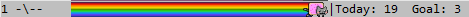

Nyan Mode - Turn your Emacs into Nyanmacs!
WARNING, MIND DUMBING CONTENT INSIDE.
Table of Contents
1 Nyan Mode
"Nyan-mode. It's things like this that make me proud to be an emacs user." - mitchellh
NEW! Read the Nyanmacs story!
Nyan Mode is an analog indicator of your position in the buffer. The Cat should go from left to right in your mode-line, as you move your point from 0% to 100%.

2 Features
- Mind dumbing content included,
- Experimental animation (M-x nyan-start-animation, M-x nyan-stop-animation),
- Wavy rainbow (M-x set-variable <ret> nyan-wavy-trail <ret> t),
- Customizable properties.
NOT INCLUDED: music.
3 Download/source
Everything is on Github - https://github.com/TeMPOraL/nyan-mode :).
4 Using Nyan Mode with custom modeline
For those who were asking, or are planning to, Amit Patel shared some tips on how to make nyan-mode work with custom modeline.
She basically changed the mode-line-format to include:
(:eval (list (nyan-create)))
5 Known issues
It's my second attempt to write a minor mode in Emacs, so there will definiely be some bugs.
This version uses XPM images, which should be supported by default by most Emacs 23 installations, Windows included. In case it doesn't work, try switching to master-png branch. This branch, however, may have it's own issues:
There was a problem with displaying PNG images, which require libpng to be available for Emacs. The lib is sometimes missing (e.g. some Windows installation). To make it work on Windows, one needs to download a proper DLL and put it into emacs bin/ folder. To see which DLL is needed, do: M-x describe-variable <ret> image-library-alist <ret>.
So far it didn't work on Emacs 24 :(. Any help with that would be appreciated.
Thanks, MaikB :).
Customizing nyan-animate-nyancat is broken; don't do it.
6 Credits
Code and idea inspired by sml-modeline.el, written by Lennart Borgman. See: http://bazaar.launchpad.net/~nxhtml/nxhtml/main/annotate/head%3A/util/sml-modeline.el
For animated Nyan Cat, I used frames by DryBowser455.
{kind=link}
7 Feedback
If you like it / don't like it, drop me a message at temporal.pl@gmail.com. You can also discuss it on Hacker News.
Jacek Zlydach, http://temporal.pr0.pl/devblog/
8 What's all about with that cat?
HTML generated by org-mode 7.3 in emacs 23